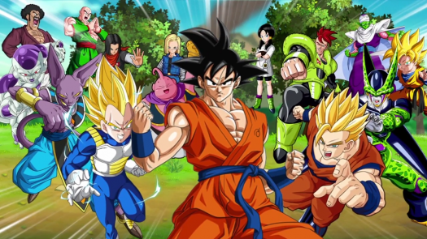

Related Works
Back
Dragon Ball Z
Dragon Ball Z continues the adventures of Goku, who, along with his companions, defend the Earth against villains ranging from aliens (Frieza), androids (Cell) and other creatures (Majin Buu). While the original Dragon Ball anime followed Goku from childhood to early adulthood, Dragon Ball Z is a continuation of his adult life, but at the same time parallels the life of his son, Gohan, as well as the development of his rival Vegeta.

Dragon Ball
Dragon Ball was initially inspired by the classical Chinese novel Journey to the West, as well as Hong Kong martial arts films. The series follows the adventures of the protagonist, Son Goku, from his childhood through adulthood as he trains in martial arts and explores the world in search of the seven orbs known as the Dragon Balls, which summon a wish-granting dragon when gathered. Along his journey, Goku makes several friends and battles a wide variety of villains, many of whom also seek the Dragon Balls.

Links To Videos
Link To Animation
Another Link To Animation